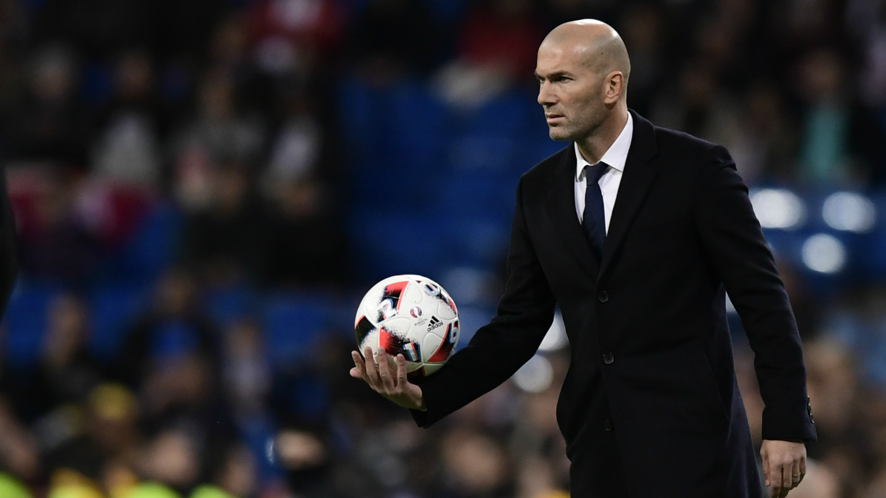

Nombre: Zinedine Zidane
Teléfono: 648356634
El fichaje de Zidane por el Real, comenzó a gestarse en una cena en Montecarlo, en la que coincidieron en la misma mesa Florentino Pérez y el propio Zidane. El presidente del Real Madrid le pasó una servilleta escrita en la que le preguntaba en francés si quería jugar en el Real Madrid. Zidane devolvió la servilleta con un escueto: «Oui».26 A partir de ahí, se intensificaron las negociaciones por su traspaso, que se cifró finalmente en 77,5 millones de euros,27 convirtiéndolo en su tiempo en el fichaje más caro de la historia del fútbol. El 10 de julio de 2001, fue presentado con la camiseta con el número «5» del Real Madrid, que anteriormente había vestido el ex-capitán Manolo Sanchís.28 Zidane se convirtió en el segundo de los cuatro fichajes «galácticos» (Figo, Zidane, Ronaldo y Beckham), término acuñado por la prensa para referirse a ese equipo compuesto por las grandes estrellas del fútbol del momento.29 Durante las cinco temporadas que disputó como madridista, Zidane compartió vestuario con jugadores como Figo, Beckham, Ronaldo, Raúl, Owen, Hierro, Roberto Carlos o Iker Casillas entre otros. Su palmarés con el Real Madrid, fue de una Liga, dos Supercopas de España, una Liga de Campeones, una Supercopa de Europa y una Copa Intercontinental, alcanzando a nivel individual un «FIFA World Player» y un «UEFA Club Player of the Year».
Más información